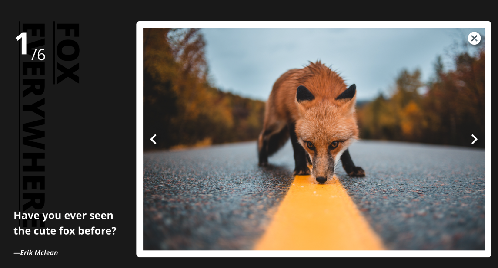

JS地下城：11F-燈箱效果

規則
- 【特定技術】不可用 JS 框架，只能單純用原生 JS。
- 【特定技術】需符合響應式設計。
- 【特定技術】當螢幕伸縮(resize)時，介面與 JS 功能也需正常
這次的關卡大部份就是練習 JS 的語法
主要就是語法不熟 需要花時間去找出寫法 囧~
這次燈箱的圖片 花了點時間 去 unsplash 申請這個網站的 api
直接從 api 裡去下載圖片就不用再一張一張去把圖片下載回來也能產圖了 蠻好玩的 有興趣的朋友可以試試
LightBox 概念
首先我先將所有的資訊都放在 photo 的列表裡
點了圖後 直接取得 li 裡的 data 資訊後 放到 lightbox 上
有助後續若要修改圖片的話 只要改一個地方就好
fetch
在取圖片的時後 使用fetch來取
發現 fetch 在請求 api 資料時 沒有帶參數的功能，必需寫在網址上
| 參數 | 功能 |
|---|---|
| w，h | 用於調整照片的寬度和高度 |
| crop | 用於對照片進行裁剪 |
| fm | 用於轉換圖像格式 |
| auto=format | 用於根據用戶瀏覽器自動選擇最佳圖像格式 |
| q | 用於在使用有損文件格式時更改壓縮質量 |
| fit | 用於在指定尺寸內更改圖像的適合度 |
| dpr | 用於調整圖像的設備像素比率 |
RWD
在頁面製作上，使用了 rem 來處理
詳細部份 可以參考我先前寫的這篇文章 rwd 自適應文字大小
大致上就是這樣囉 也請多多指教^_^
Donate
如果這整篇文章有幫助到你的話 也歡迎請我喝杯飲料 ^_^